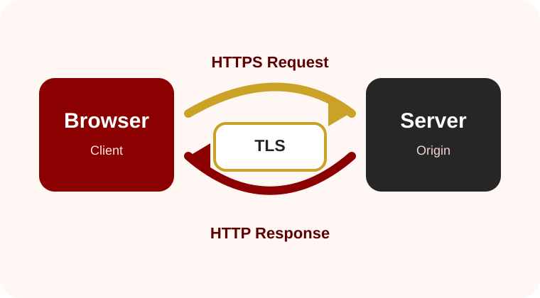

HTTP
HTTP is the application-layer protocol that lets browsers request resources such as HTML, CSS, images, scripts, video, and API data.
How web communication grew from simple document requests into secure, responsive, high-performance internet infrastructure.
Home
A responsive research site on the protocols that make websites usable, secure, and fast.
Every web page begins with a conversation between a client and a server. HTTP defines the request and response pattern behind that conversation. HTTPS adds transport security so the same exchange can be protected from eavesdropping, tampering, and impersonation.

HTTP is the application-layer protocol that lets browsers request resources such as HTML, CSS, images, scripts, video, and API data.
HTTPS is HTTP sent through a protected TLS connection. It helps verify the server and protects data while it travels across networks.
HTTP/3 keeps HTTP semantics but uses QUIC instead of TCP, improving connection setup and reducing some latency problems found in older transport designs.
This site focuses on four connected questions: how HTTP evolved, why HTTPS became essential, how TLS and certificates create trust, and why HTTP/3 and QUIC changed the performance model of the modern web.
| Protocol | Main purpose | Security position | Modern use |
|---|---|---|---|
| HTTP/1.1 | Text-based request and response communication | Needs TLS to be encrypted | Still widely supported for compatibility |
| HTTPS | HTTP over TLS | Encrypted, authenticated, integrity-protected | Expected default for public websites |
| HTTP/2 | Binary framing and multiplexing over one connection | Commonly deployed with TLS | Improves efficiency over HTTP/1.1 |
| HTTP/3 | HTTP semantics over QUIC | QUIC integrates TLS 1.3 | Designed for lower latency and better stream behavior |